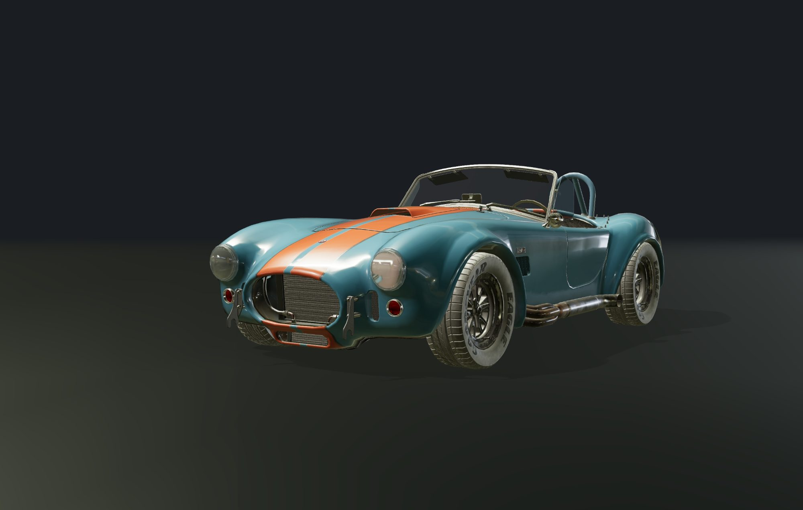
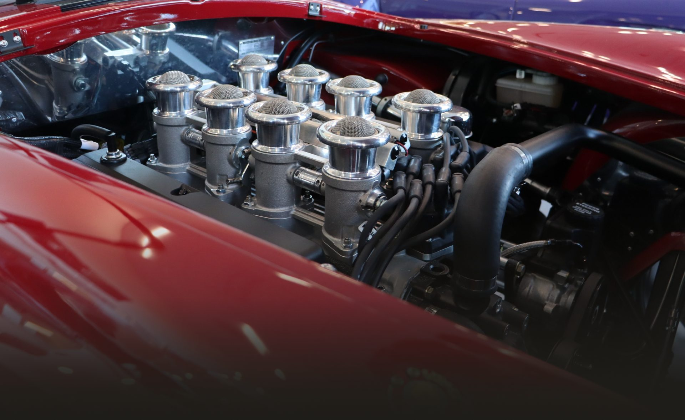
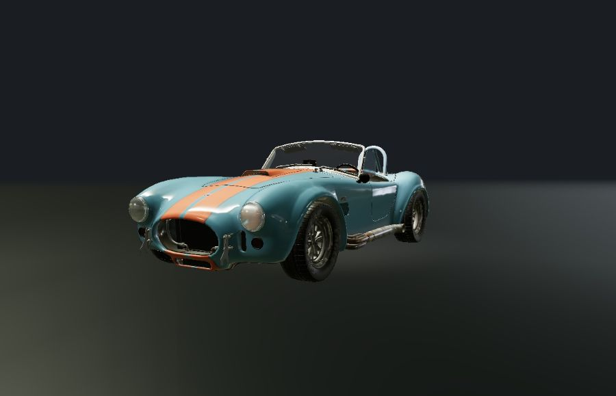

Two to four a year. Every one of them by hand.
A Backdraft Cobra is not ordered from a page. It is specified, then built, and the difference shows up in places a photograph cannot reach.
What is actually underneath
- 0 cubic inches The engine the car is named after.
- 0 wheels, one mesh each Polished alloy. Goodyear Eagle, lettering out.
- 0 separate parts on screen Shell, doors, boot, glass, lamps, seats, wheels, rods.




It comes apart in the order it went together.
Shell first. Then the doors, the boot lid, the glass. The small chrome last, because it goes on last.
Keep going and it puts itself back.
Yours is not built yet.
Which is the only honest thing a builder can say before you have told them what you want.
Start the specification